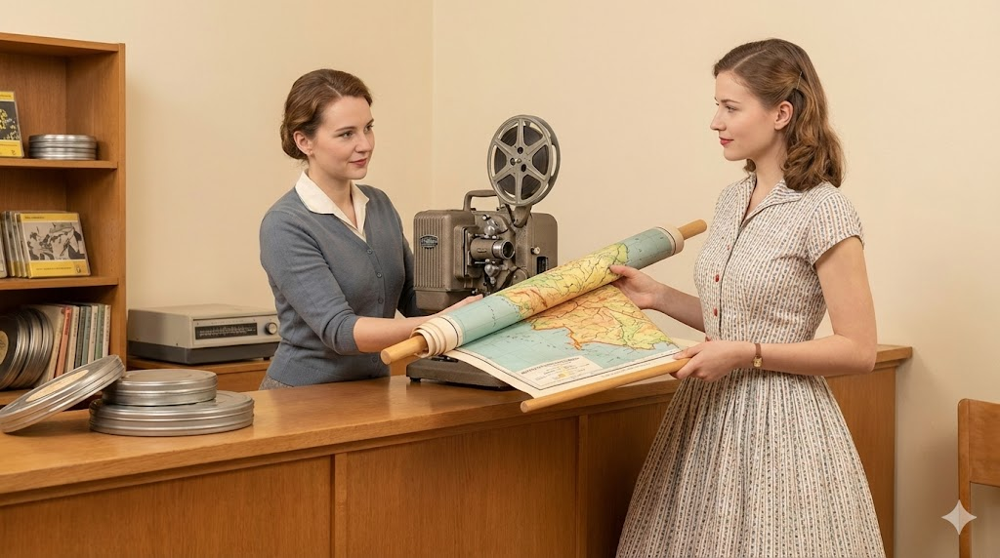

100 Jahre Medienmacht.
Vom Glasdia zur Quantenlektion.
Vom Epidiaskop zur KI-Assistenz.
Wir waren immer da. Wir bleiben es.
Wir sind das MZplus.
Und das schon seit einer Weile.
Es war 1926. Die Weimarer Republik existierte noch, Stummfilme waren der heißeste Scheiß, und irgendwo im Saarpfalz-Kreis hatte jemand die brillante Idee: „Lass uns Bilder in Schulen bringen!"
Die Kreisbildstelle war geboren. Und mit ihr eine Tradition, die 100 Jahre überdauert hat — Kriege, Währungsreformen, den Walkman, Netscape Navigator, Streaming und ja, sogar Windows Vista.
Unser erster „Server" war ein Holzregal voller Glasdias. Ladezeit: sofort. Absturzrate: null. MTTR: ein Taschentuch. Einfach mal drüber nachdenken.
Heute sind wir das MZplus — das „Plus" steht für alles, was früher undenkbar war: Cloud-Infrastruktur, Tabletflotten, KI-Workshops, 3D-Drucker und einen MakerSpace, in dem Schülerinnen und Schüler echte Roboter programmieren. Die Filmrollen liegen im Museum. Die Mission lebt.
Zwischen 1926 und heute haben wir folgende Medienformate unterstützt: Glasdia, Lichttonfilm, 16mm, 8mm, Overhead-Folie, VHS, Betamax (kurz), Laserdisc (noch kürzer), CD-ROM, DVD, Blu-ray, Streaming und jetzt Cloud. Wir sind praktisch die Experten des digitalen Sterbens.
Von der
Filmrolle
zur Cloud.
100 Jahre in acht Akten. Technik, Bildung, zwei Weltkriege, ein VHS-Boom, 640 KB RAM und die Frage: Was kommt nach der KI?
Die Kreisbildstelle erwacht
.jpg)
Ein Mann, ein Projektor, ein Stapel Glasdias. So begann alles. Die Kreisbildstelle des Saarpfalz-Kreises öffnet ihre Türen — in einer Zeit, in der Kino noch Luxus war und ein Lichtbild im Unterricht dasselbe bedeutete wie heute ein interaktives 8K-Whiteboard.
„Stell dir vor: Du zeigst als Lehrer eine Karte von Afrika. Das galt als Hochtoechnologie™. Kein WLAN nötig. Kein Passwort. Einfach: Licht."
Der Auftrag: simpel und genial. Visuelle Medien für alle Schulen zugänglich machen. Jeder Pfennig zählte. Keine Firewall. Kein IT-Ticket. Hingehen, ausleihen, projizieren.
Der Lieferwagen der Kreisbildstelle
.jpg)
Mit dem Tonfilm ändert sich alles. Die Bibliothek wächst, der Lieferwagen der Kreisbildstelle fährt durch den Saarpfalz-Kreis — ein frühes Netflix auf vier Rädern, nur ohne Autoplay, ohne Werbung und mit 100% mehr Schlaglöchern.
Der Fahrer war der beliebteste Mensch in jeder Schule. Er brachte die Filmrollen. Heute würden wir sagen: Er hatte Glasfaser.
16mm und der Duft von Bildung
Nach dem Krieg: Wirtschaftswunder und das ratternde Geräusch des 16mm-Projektors. Generationen erinnern sich an dunkle Klassenräume, den überhitzten Motor und den magischen Moment, wenn der Film anspringt. Die Medienstelle wächst rasant.
„Ich erinnere mich an den Biologiefilm über Ameisen. 30 Minuten. Alle schliefen nach fünf. Aber der Projektor? Spektakulär."
Der Overhead-Projektor dominiert
.jpg)
Der Overhead-Projektor betritt die Bühne — und mit ihm transparente Folien, bunte Stifte und die Kunst, rückwärts zu schreiben. Wer einen OHP bedienen konnte, war automatisch Respektsperson. Auch Dia-Serien und erste AV-Medien finden ihren Weg in die Schulen.
Die goldene Ära des: „Verdunkeln Sie bitte den Raum, ich bin gleich fertig."
VHS, Betamax und die Geburt des Technikstresses
.jpg)
VHS vs. Betamax. Wir setzen aufs richtige Pferd. Tausende Kassetten füllen die Regale. Daneben erscheinen die ersten Heimcomputer. C64. Atari. Irgendwo blinkt ein grüner Cursor auf schwarzem Bildschirm. Die Bestandsdatenbank der Kreisbildstelle läuft auf einem PC.
640 KB RAM. Die Experten sagten: „Das müsste für immer reichen." Spoiler: Es reichte nicht.
Das Schild kommt runter
.jpg)
„Kreisbildstelle" — vier Jahrzehnte an der Wand — weicht dem neuen Namen: Medienzentrum Saarpfalz-Kreis. Ein Schraubenzieher, ein symbolischer Akt, eine Menge Nostalgie. Beamer ersetzen Projektoren. DVDs ersetzen VHS. Das Internet erscheint wie ein Wunder und eine Bedrohung gleichzeitig.
Erster Schulserver: online. Erste Cyberattacke: 3 Minuten später. Der Fortschritt kam schnell.
8.000 Tablets. Eine Herkulesaufgabe.
.jpg)
Das MZplus entsteht. Nicht als Marketingbegriff — als Programm. Schulkoffer voller Tablets. Mobile Device Management. WLAN in jedem Klassenraum. Interaktive Panels ersetzen Tafeln. Cybersicherheit wird Lehrfach.
Von der Filmrolle zur Tabletflotte: Das ist keine Evolution. Das ist Quantensprung.
Kompetenzzentrum der Zukunft
.jpg)
3D-Drucker rattern. Roboter summen. KI schreibt Gedichte.
Das MZplus 2026 ist mehr als ein Medienzentrum — es ist ein Labor, eine Werkstatt,
ein Denkraum. Hier entstehen die Kompetenzen von morgen.
Medienverleih 4.0, Cloud-Infrastruktur, MakerSpace, Fortbildungen — alles unter einem Dach. Mit demselben Auftrag wie 1926: Bildung zugänglich machen. Für alle. Jetzt.
Unsere
Superkräfte.
Früher: Filmrollen ausliefern. Heute: digitale Zukunft gestalten. Das Kerngeschäft hat sich verändert. Der Anspruch nicht.
Medienverleih 4.0
Früher Filmrollen in Metallkoffern. Heute: Tausende Lehrfilme und interaktive Medien auf Knopfdruck — über SESAM/Edupool, rechtssicher, lehrplankonform, jederzeit abrufbar. Keine Kratzer. Kein Filmriss. Keine Latespäne.
Technik-Support für alle Schulen
Interaktive Panels, WLAN, Endgeräte — wir sorgen dafür, dass die Infrastruktur läuft. Von der Installation bis zur Wartung, von der Grundschule bis zum Gymnasium. Der einzige Unterschied zu früher: Heute sprechen die Geräte zurück.
Fortbildung für mutige Lehrkräfte
Workshops zu Robotik, Coding, Filmproduktion, kritischem Umgang mit Social Media und KI. Für alle, die verstehen wollen, was ihre Schüler schon längst wissen. Keine Vorkenntnisse nötig. Nur Neugier.
Server, Cloud & Cybersecurity
Wir hosten Serverstrukturen, verwalten Netzwerke und schulen in Cybersicherheit. Das klingt trocken. Ist es aber nicht — nicht wenn man bedenkt, dass unsere erste Datenbank auf einer Karteikarte lief. DSGVO-konform. Lokal. Sicher.
MakerSpace: Wo Ideen Körper bekommen
3D-Drucker, Virtual Reality, Lasercut, Robotik, Programmierung — ein Ort, an dem man einfach anfangen darf. Scheitern ausdrücklich erlaubt. Entdecken ausdrücklich erwünscht. Hausaufgaben vergessen erwünscht.
Was kommt als Nächstes?
In 100 Jahren haben wir nie aufgehört zu fragen: Was braucht Bildung morgen?
KI-Lernbegleiter? Augmented Reality im Geschichtsunterricht? Holografische Experimente?
Wir sind gespannt wie Sie.
Wenn man alle VHS-Kassetten, die wir je im Verleih hatten, aufeinanderstapeln würde, wäre der Turm höher als der Eiffelturm. Das macht das MZplus zu einem der größten unerkannten Wahrzeichen des Saarpfalz-Kreises. Bitte entsprechend würdigen.
Mach.
Brich.
Lern.
Der MakerSpace ist das Anti-Klassenzimmer. Hier gibt es keine Hausaufgaben. Nur Fragen — und Werkzeuge, um sie zu beantworten.
Das Labor für Entdecker
Ein Bee-Bot flitzt über ein Schachbrettmuster. Dahinter surrt ein 3D-Drucker und baut Schicht für Schicht etwas, das vorher nur eine Idee war. Das ist der MakerSpace des MZplus.
Kinder und Jugendliche lernen hier, dass Technologie nicht einfach passiert — sondern gemacht wird. Von Menschen. Von ihnen.
„Scheitern ist kein Bug.
Es ist ein Feature."
Im MakerSpace gilt: Wer nichts kaputt macht, lernt nichts. Wer nichts ausprobiert, erfindet nichts. Die Lehrpläne von morgen schreiben die Schüler von heute.
Rekordzeit von Idee bis 3D-gedrucktem Ergebnis: 47 Minuten. Rekordhalter: Schülerin aus der 6. Klasse. Gedruckt: ein Miniatur-Projektorgehäuse. In Erinnerung an 1926.
3D-Druck
Was früher Gips und Pappe war, ist heute Filament. Schüler designen, Schüler drucken, Schüler halten das Ergebnis in den Händen. Das Staunen? Jedes Mal gleich groß. Die Ideen? Jedes Mal verrückter.
Robotik & Coding
Von Scratch bis Python. Von Bee-Bot bis autonomem Fahrzeug. Wer einen Roboter programmiert, lernt nicht Informatik — er lernt, logisch zu denken, Fehler zu finden und nicht aufzugeben.
Virtual Reality
Geschichte erleben statt lesen. Biologie sehen statt beschreiben. Physik anfassen statt berechnen. VR macht den Unterschied zwischen wissen und verstehen.
🎥 Filmproduktion: Vom Zuschauer zum Macher
Wir begannen 1926 mit dem Abspielen von Filmen. Heute produzieren wir sie — oder besser: unsere Schülerinnen und Schüler tun es. Script, Kamera, Schnitt, Ton, Farbe, Sound Design. Das Medienzentrum lehrt nicht mehr nur, Medien zu konsumieren. Es lehrt, sie zu gestalten.
Von der Glasdia-Lichtshow 1926 zur 4K-YouTube-Produktion 2026. Die Kamera ist kleiner geworden. Der Ehrgeiz nicht.
Was kommt
nach
der KI?
Wir wissen es nicht. Aber wir werden dabei sein. Das ist seit 1926 unser einziges, unveränderliches Versprechen.
Die Technik ändert sich. Der Auftrag bleibt.
In 100 Jahren haben wir Glasdias, Filmrollen, VHS, DVD, Streaming und Cloud überlebt. Wir haben uns jedes Mal verwandelt.
Nicht weil wir mussten. Sondern weil wir verstanden haben, worum es wirklich geht: nicht das Medium, sondern die Botschaft.
Und die Botschaft lautet: Bildung gehört allen.
KI-Lernbegleiter
Personalisierte KI-Assistenten für jeden Schüler. Nicht um Hausaufgaben zu schreiben — sondern um zu fragen, zu erklären, zu motivieren. Wie ein Nachhilfelehrer, der nie schläft, nie ungeduldig wird und nie Kaffee braucht.
AR im Unterricht
Augmented Reality macht Geschichtsstunden zur Zeitreise. Julius Cäsar erscheint im Klassenraum (holografisch, beruhigt euch). DNA dreht sich in 3D vor dem Chemietisch. Physik wird sichtbar.
Digitale Souveränität
Jede Schülerin, jeder Schüler versteht, wie Algorithmen funktionieren, wie Daten gespeichert werden und warum das ihre Entscheidungen beeinflusst. Medienkompetenz 5.0. Das ist der Job des MZplus.
Was auch immer kommt
In 100 Jahren werden sie auf uns zurückblicken und lächeln, so wie wir heute auf die Kreisbildstelle lächeln. Und sie werden dasselbe sagen: „Die hatten den richtigen Instinkt."
„Wir befähigen Menschen im Saarpfalz-Kreis, Medien nicht nur zu konsumieren, sondern sie souverän und kreativ zu gestalten."
— Mission MZplus · 1926 bis ∞Kommen
Sie vorbei.
Wir haben keinen Filmvorführer mehr an der Tür. Aber wir freuen uns trotzdem über Besuch.
MZplus · Medienzentrum Plus
Saarpfalz-Kreis, Saarland
Homburg / Blieskastel
08:00 – 16:00 Uhr
(Früher gab es Filmverleih auch nach Feierabend. Das waren andere Zeiten.)
Amt für Bildung und Medien
Unser Team hat zusammen mehr Geräteausfälle überlebt als ein durchschnittliches Rechenzentrum. Wir sind kampferprobte Bildungsnerds. Und wir trinken definitiv zu viel Kaffee.
mzplus ~/medienzentrum $ wc -l IMPACT.md ∞ Schüler befähigt mzplus ~/medienzentrum $ _█
Aktuelle Meldungen
🎉 100-Jahr-Jubiläum 2026 — Feiern Sie mit uns das Medienzentrum, das aus einer Kreisbildstelle ein digitales Kompetenzzentrum machte. Veranstaltungen, Ausstellungen und natürlich: einen historischen Filmabend.